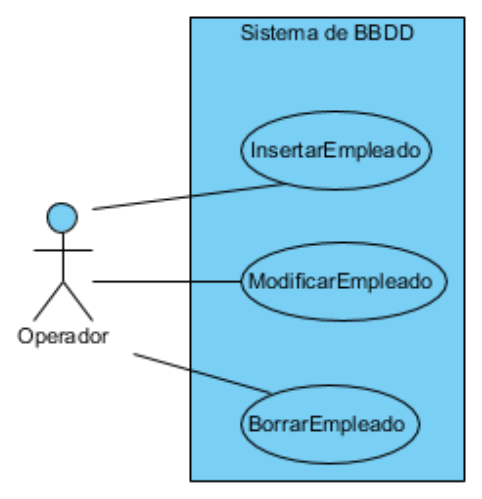
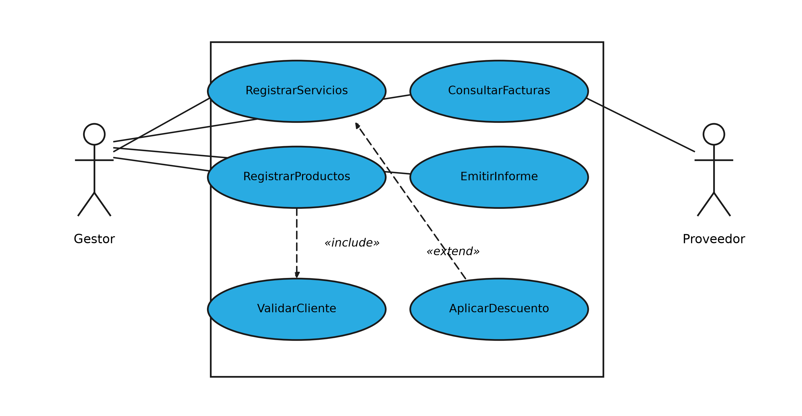

El diagrama de casos de uso
El diagrama de casos de uso es el primero que se dibuja en un proyecto y, curiosamente, el que menos detalles técnicos contiene. No habla de clases, ni de atributos, ni de lenguajes de programación: habla de quién va a usar el sistema y para qué. Su valor está precisamente ahí. Antes de discutir cómo se guardará un empleado en la base de datos, conviene haber acordado quién puede insertar empleados, quién puede modificarlos y quién puede borrarlos, porque en esas tres preguntas se esconde el alcance completo del sistema.
Esa aparente sencillez esconde también su mayor peligro, y conviene decirlo desde el principio. Un diagrama de casos de uso mal hecho no produce errores de compilación ni fallos visibles: produce una factura de alcance. Un caso de uso llamado GestionarFacturas parece correcto a todo el mundo, se aprueba sin discusión y esconde que nadie ha decidido si incluye crear, modificar, anular, listar y facturar por lotes. Cuando el cliente pide "lo de anular", resulta que no estaba en el precio, y la discusión ya no es técnica sino contractual. El diagrama de casos de uso es la herramienta que evita eso, y solo funciona si sus elipses están escritas con precisión.
Se utiliza para entender el uso del sistema. Muestra un conjunto de actores, las acciones o casos de uso que se realizan sobre él y las relaciones que se establecen entre los unos y las otras. Y tiene una virtud que los demás diagramas no tienen: se puede leer con el cliente delante. Un usuario no técnico entiende sin esfuerzo una figura que dice que un operador puede insertar, modificar y borrar empleados, y esa conversación, mantenida al principio del proyecto, evita discusiones mucho más caras al final.
Los elementos del diagrama
El vocabulario de este diagrama es corto, y conviene fijarlo con precisión porque los tres términos se confunden con facilidad.
Un actor es cualquier cosa que interactúa con el sistema desde fuera de él. No son solo personas: también lo son otros sistemas y, en algunos modelos, el tiempo. Los actores se representan con la figura de un muñeco y su nombre en singular, porque representan un papel y no un individuo concreto: Operador es un actor, "el empleado Juan Pérez" no lo es. Un mismo usuario real puede desempeñar varios actores al mismo tiempo, y un actor puede serlo de varios sistemas a la vez, que es lo que ocurre con una pasarela de pago o con una administración pública.
Reconocer a los actores que no son personas es la parte del ejercicio donde más gente se deja casos. La prueba práctica consiste en buscar todo aquello que el sistema necesite consultar o al que necesite notificar algo: si el sistema tiene que hablar con una pasarela de pago, con una impresora, con un servicio de correo o con un fichero que deja otro programa, todo eso son actores y todos ellos tienen que aparecer en el diagrama. Un caso de uso sin actor es un caso de uso que nadie pidió, y ahí hay un error de alcance.
Un caso de uso es un objetivo completo que un actor persigue con ayuda del sistema. Se representa con una elipse y se nombra siempre con un verbo en infinitivo seguido de un objeto: InsertarEmpleado, EmitirFactura, ConsultarStock. Ese formato no es una convención estética, sino una prueba de calidad: si el nombre no empieza por un verbo, lo más probable es que no sea un objetivo sino un dato; y si no tiene un objeto claro, es que el objetivo está mal definido. La palabra "gestionar" es la peor enemiga de este diagrama, porque no compromete a nada: GestionarFacturas suena a caso de uso y no lo es, es un cajón donde caben cinco objetivos distintos.
Un caso de uso siempre tiene que aportar un resultado de valor para el actor que lo ejecuta. Insertar un empleado es un caso de uso porque, cuando termina, el empleado está en el sistema. Validar el DNI, en cambio, no es un caso de uso: no aporta valor por sí solo, es un paso interno de otro objetivo. Esa distinción entre objetivos y pasos es la que decide qué se dibuja como elipse y qué se queda dentro, y es la causa más frecuente de diagramas recargados.
La frontera del sistema es el rectángulo que encierra los casos de uso. Todo lo que aparece dentro es responsabilidad del sistema que estamos construyendo; todo lo que queda fuera (los actores) es el mundo exterior. Ese rectángulo es la herramienta más útil del diagrama, porque obliga a decidir qué queda dentro del proyecto y qué se resolverá con otra aplicación. Cuando el cliente pide "que se pueda pagar con tarjeta", la frontera es la que fuerza la pregunta de si el cobro lo hace nuestro sistema o se delega en la pasarela del banco.
La relación de comunicación, también llamada asociación, es la línea que une a un actor con un caso de uso. Indica que ese actor participa en ese caso de uso, y nada más: no indica orden, ni prioridad, ni si el actor lo inicia o solo lo consulta. Detrás de esa relación hay un diálogo concreto entre el actor y el sistema, pero ese diálogo no se cuenta aquí, sino en los diagramas de interacción.
Un ejemplo de referencia

En la figura, el actor Operador se relaciona con el sistema de base de datos a través de tres casos de uso: InsertarEmpleado, ModificarEmpleado y BorrarEmpleado. Se lee como una frase: el operador puede insertar, modificar y borrar empleados. El rectángulo grande es la frontera del sistema, y todo lo que queda fuera de él se considera el mundo exterior.
Merece la pena observar lo que el diagrama no dice. No dice en qué orden se hacen las tres operaciones, ni qué formularios aparecen, ni cómo se validan los datos, ni si insertar requiere permisos especiales. Tampoco dice si el operador es una persona o un programa automático. Toda esa información llegará después, en los diagramas de secuencia y de actividades, y ese reparto es deliberado: este diagrama responde a la pregunta previa, la de quién puede hacer qué.
Hay además un detalle de lectura que conviene interiorizar. Las tres elipses tienen el mismo tamaño y están al mismo nivel, y eso significa que ninguna depende de las otras: el sistema tiene que ofrecer las tres funcionalidades completas e independientes. Si al leer un diagrama de casos de uso dos elipses parecen necesitarse, es que en realidad son una sola, o que falta una relación de inclusión entre ellas. Este diagrama, en cambio, es plano a propósito.
Otras relaciones entre casos de uso
Además de la relación de comunicación, un caso de uso puede relacionarse con otro de tres maneras, y las tres tienen su símbolo. Estas relaciones son las que permiten que un diagrama siga siendo legible cuando el sistema crece, porque evitan repetir el mismo conjunto de pasos en cinco elipses distintas.

La primera es la inclusión, anotada con el estereotipo «include», y significa que un caso de uso incorpora siempre el comportamiento de otro. Se usa para extraer un fragmento común: en la figura, tanto RegistrarServicios como RegistrarProductos tienen que validar antes los datos del cliente, así que ese paso se convierte en el caso de uso ValidarCliente y los otros dos lo incluyen. La flecha parte del caso de uso que incluye y apunta al incluido, y va en trazo discontinuo con la punta abierta, diferente de la punta triangular de la generalización.
La segunda es la extensión, anotada con «extend», y es el mecanismo contrario: un caso de uso añade un comportamiento opcional a otro en determinadas circunstancias. En la figura, AplicarDescuento extiende a RegistrarServicios, lo que significa que registrar una factura de servicios ocurre siempre y que aplicar un descuento ocurre solo a veces. La flecha sale del caso de uso que extiende y apunta al extendido, y esa dirección es la que más se equivoca en los exámenes.
La diferencia entre las dos es la que hay que tener clara: lo incluido ocurre siempre y lo que extiende ocurre solo a veces. Un diagrama donde todos los fragmentos se han marcado como «include» está mal, aunque el dibujo sea correcto, porque está afirmando que todo pasa siempre. Y al contrario, marcar como «extend» un paso obligatorio es afirmar que el sistema puede funcionar sin él, lo que casi nunca es cierto.
Con la extensión conviene además respetar una regla práctica: el caso de uso que extiende no debe ser un paso del caso extendido. Si al leer la figura parece que "aplicar descuento" es un paso dentro de "registrar servicios", entonces no es una extensión, es una inclusión. La extensión siempre describe una variante que se añade a un comportamiento que ya está completo sin ella.
La tercera es la generalización, que puede darse entre actores y entre casos de uso. Entre actores sirve para factorizar lo común: si Gestor y Administrador pueden hacer todo lo que hace Empleado y además otras cosas, ambos heredan de Empleado, y las relaciones de comunicación se declaran una sola vez, en la clase madre. Entre casos de uso funciona igual, aunque aparece menos en la práctica; un ejemplo típico sería PagarConTarjeta y PagarConTransferencia como especializaciones de Pagar.
El escenario
Un caso de uso, por sí solo, no documenta nada. La elipse InsertarEmpleado es un título, no una especificación. Lo que da contenido al caso de uso es el escenario, que es una narración en lenguaje natural de una situación concreta con principio y final. Cuando un caso de uso tiene varios caminos posibles, se escribe un escenario principal, que describe el desarrollo normal, y uno o varios escenarios alternativos, que describen las desviaciones.
El escenario principal de InsertarEmpleado podría empezar así:
| Apartado | Contenido |
|---|---|
| Título | Insertar un empleado nuevo |
| Actor | Operador |
| Precondición | El operador ha accedido al sistema con permisos de edición |
| Desarrollo normal | 1. El operador abre la ventana de empleados. 2. Teclea el nombre, el DNI y el departamento. 3. El sistema valida los datos. 4. El sistema graba el registro y confirma la operación |
| Escenario alternativo | Si el DNI ya existe, el sistema avisa del duplicado y devuelve el control al paso 2 |
| Postcondición | El empleado queda registrado y disponible para consulta |
La precondición y la postcondición son las dos filas que más se olvidan y las que más información aportan, porque delimitan el caso de uso por arriba y por abajo. La precondición deja escrito qué tiene que ser cierto antes para que el escenario tenga sentido: si el operador no tiene permisos, este caso de uso ni siquiera empieza. La postcondición deja escrito qué tiene que ser cierto después, y ese es el resultado de valor del que hablábamos: si al terminar no se puede afirmar nada nuevo sobre el sistema, el caso de uso no era tal.
Ese texto es el material con el que después se construyen los diagramas de secuencia y de actividades. De hecho, la coincidencia no es casual: el diagrama de actividades del apartado siguiente y el diagrama de secuencia que se ve más adelante describen exactamente este escenario, cada uno desde un punto de vista distinto. Escribir el escenario una vez y dibujarlo de tres maneras distintas es la forma de trabajar; dibujar tres diagramas que cuentan historias diferentes es la forma de perder el tiempo.
Cómo se elabora un diagrama de casos de uso
Con lo anterior ya hay material suficiente para construir uno desde cero. El procedimiento que funciona es siempre el mismo, y se apoya en el texto del enunciado, no en la imaginación.
El punto de partida es releer el enunciado buscando los sustantivos que actúan. Todo aquel que haga algo con el sistema es un actor candidato: aparecerán profesores, alumnos, administrativos, proveedores o sistemas externos como una pasarela de pago. Los sustantivos que solo se guardan, como "factura" o "cliente", no son actores sino datos, y su sitio está en el diagrama de clases. La prueba para distinguirlos es sencilla: un actor es el que empuja el sistema a hacer algo.
El paso siguiente es formular los objetivos de cada actor. Para ello se recorre el enunciado buscando los verbos y se escriben como objetivos completos: "un gestor quiere registrar una factura", "un gestor quiere emitir un informe mensual", "un proveedor quiere consultar el estado de sus facturas". De esa lista, cada objetivo que tenga un principio y un final claros se convierte en un caso de uso, y se nombra con el verbo en infinitivo y el objeto: RegistrarFactura, EmitirInformeMensual, ConsultarEstadoFacturas.
A partir de ahí el dibujo es casi mecánico. Se traza el rectángulo de la frontera y se coloca dentro la lista de casos de uso; fuera quedan los actores, cada uno con una relación de comunicación hacia los casos en los que participa. Y solo al final conviene plantearse las relaciones de inclusión y extensión, revisando si algún grupo de pasos se repite en varios casos de uso, porque extraer un caso de uso compartido antes de tener la lista completa suele llevar a fragmentar el modelo sin necesidad.
Aplicado al sistema de facturación del apartado anterior, el resultado sería un diagrama con dos actores, Gestor y Proveedor, y cinco casos de uso dentro de la frontera: RegistrarFacturaServicios, RegistrarFacturaProductos, ConsultarFacturas, EmitirInformeMensual y MantenerCatalogoServicios. Además, los dos primeros incluirían un caso de uso común, ValidarDatosCliente, extraído precisamente porque los dos lo necesitan. La conclusión práctica que deja este diagrama es que el sistema tiene que ofrecer cinco funcionalidades completas, y que ninguna de ellas es "gestionar facturas", que era la respuesta vaga con la que se suele empezar.
El campo de aplicación
El diagrama de casos de uso es el más útil de toda la familia y, a la vez, el más fácil de estropear. Su campo de aplicación natural es el principio del proyecto, cuando todavía se está negociando el alcance, y su público es el cliente: es el único diagrama del bloque que se puede enseñar a alguien que no programa sin tener que explicarle antes la notación, porque sus elementos (personas, objetivos y una frontera) son conceptos cotidianos.
Eso lo convierte en una herramienta excelente para tres cosas concretas: acordar el alcance del sistema, detectar a tiempo funcionalidades que nadie había mencionado y repartir responsabilidades entre los actores. Y también lo convierte en una herramienta peligrosa cuando se usa mal, porque un caso de uso mal nombrado pasa desapercibido mucho tiempo: una elipse llamada GestionarFacturas parece correcta, pero esconde un conjunto de objetivos sin definir que no se descubrirá hasta que alguien tenga que programarla.
Hay además un error de uso muy extendido que conviene desactivar: querer que el diagrama de casos de uso cuente el orden de las cosas. No puede, y forzarlo produce diagramas llenos de flechas entre casos de uso que no significan nada. El orden es competencia del diagrama de secuencia y del de actividades. Este diagrama tiene una única misión, que es responder a la pregunta de quién puede hacer qué, y hacerlo bien exige renunciar a todo lo demás.
Lo que tampoco debe pedírsele es información que no tiene. Este diagrama no dice en qué orden se ejecutan las cosas, ni qué formularios aparecen, ni cómo se validan los datos, ni qué ocurre si algo falla. Cuando llega el momento de decidir todo eso, el testigo pasa al diagrama de secuencia y al diagrama de actividades, que son los que se describen a continuación.